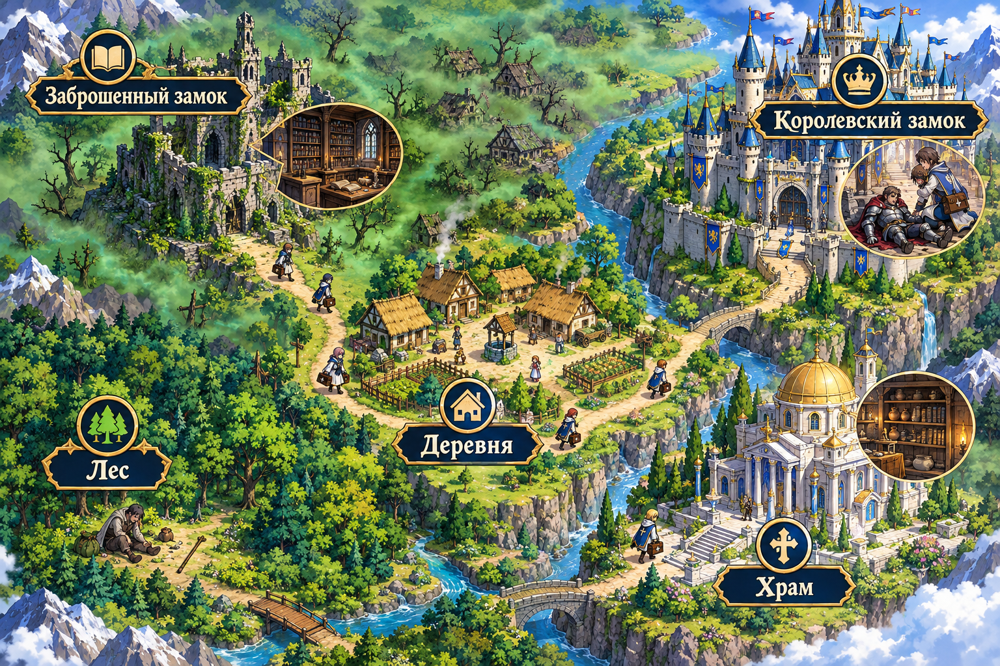
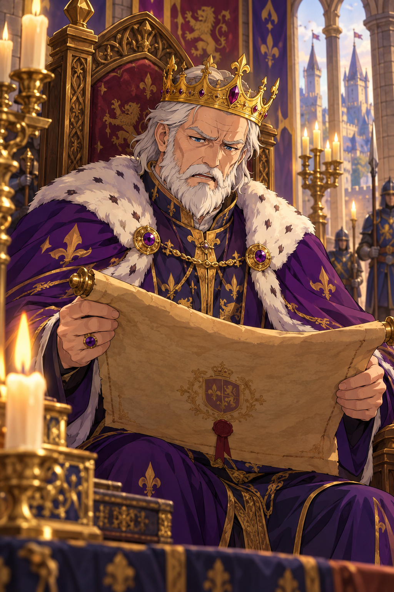

Начните с локации, отмеченной золотым маркером
Тайна Королевства Вердан

Начните с локации, отмеченной золотым маркером

Возлюбленные лекари! Тёмная хворь ползёт по моему королевству: деревни чахнут, воины слабеют, туманы зеленеют над лесами. Молва гласит, что лишь те, кто разумеет тайную науку об антибиотиках, найдут средство от заразы.
Я поручаю вам пройти по всем землям королевства — от глухого леса до моего замка, — сразить невежество, собрать пять реликвий и спасти Вердан. И знайте: склянки с песком уже перевёрнуты — королевский совет будет судить не только знания ваши, но и время пути: кто точнее и быстрее — тот и победитель. В путь, отроки!
Впишите имя и группу — они будут записаны в королевскую книгу результатов вместе с баллами и временем прохождения.
Пожалуйста, заполните оба поля — без них результат не попадёт в книгу результатов.
Разминка · вопрос 1 из 10
Десять быстрых вопросов перед стартом: за каждый верный ответ — 1 балл. Секундомер уже идёт!
Локация 1 из 5
Хворь отступила, туманы рассеялись, и колокола Вердана славят вас. Король жалует вам звание:
—
Крапивница, отёк лица, свистящее дыхание после приёма — признак аллергии: немедленно сообщите медработнику и больше не принимайте этот препарат.